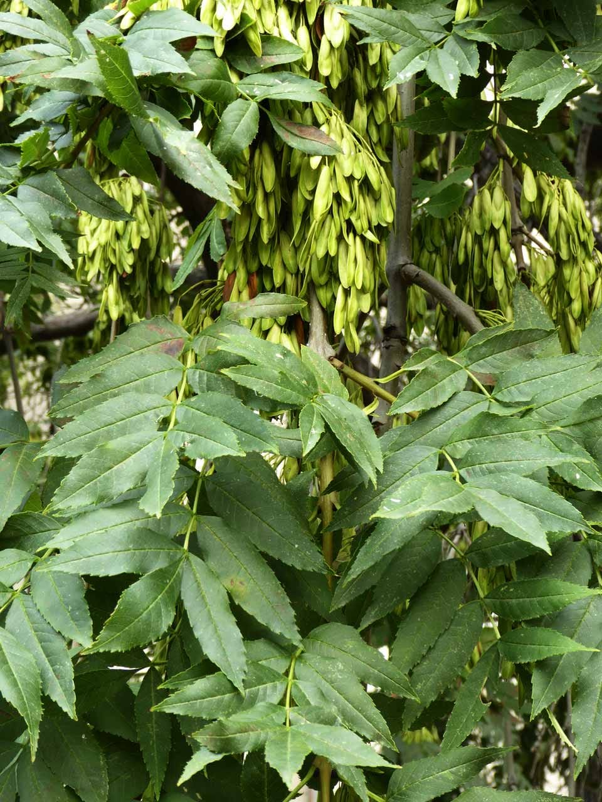
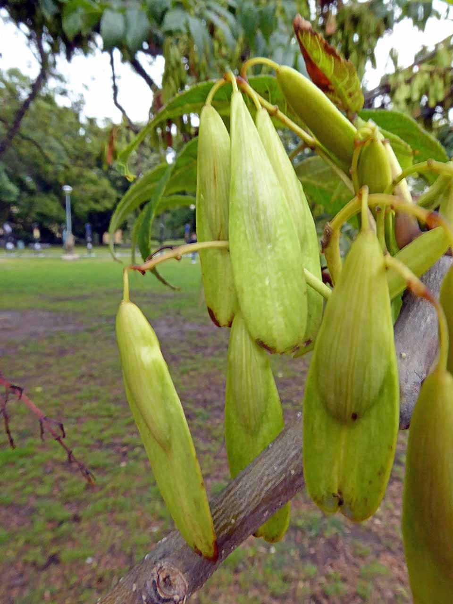
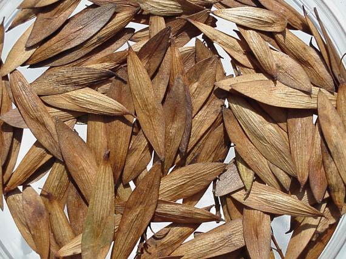

- Familia: Oleaceae (familia del fresno y del olivo).
- Tronco: es recto y leñoso, con un diámetro que varía entre 30 y 60 cm en árboles maduros. Puede alcanzar alturas de entre 10 y 25 metros, dependiendo de la especie y las condiciones de crecimiento.
- Corteza: es de color gris a marrón, con una textura que varía desde lisa en los árboles jóvenes hasta rugosa y agrietada en los árboles más viejos. La corteza se desprende en placas o tiras en algunas especies.
- Copa: es amplia y extendida, con una forma redondeada o ovalada. La disposición de las ramas es abierta, permitiendo una buena penetración de luz, lo que proporciona una sombra moderada.
- Hoja: son compuestas, pinnadas, con folíolos dispuestos en pares opuestos a lo largo de un raquis central. Cada folíolo es lanceolado y puede medir entre 5 y 10 cm de largo, con bordes enteros o dentados. Las hojas cambian de color en otoño, con tonos que pueden variar desde el amarillo hasta el rojo.
- Flor: son pequeñas y se agrupan en inflorescencias de tipo racimo o panícula. Son generalmente de color verde a morado y aparecen en primavera antes de que broten las hojas. Las flores son a menudo hermafroditas o unisexuales, dependiendo de la especie.
- Fruto: es una samara, una cápsula alada que contiene una sola semilla. Las samarás son de forma elíptica y pueden ser de color marrón claro. Se dispersan por el viento cuando maduran.
- Usos: La madera de fresno es conocida por su dureza y flexibilidad, lo que la hace ideal para la fabricación de muebles, herramientas y materiales de construcción. Los fresnos también se utilizan en jardinería y paisajismo debido a su atractivo follaje y su sombra. Además, algunos fresnos tienen valor ecológico, ya que proporcionan hábitat para diversas especies de fauna.
- Floración: ocurre en primavera, antes de que se desarrollen completamente las hojas. Las flores son pequeñas pero se agrupan en racimos que pueden ser bastante visibles.
- Fructificacion: sigue a la floración, con la producción de samarás que maduran en verano. Las samarás son dispersadas por el viento, facilitando la reproducción y colonización de nuevas áreas.
- Reproducción: se reproduce principalmente por semillas. Las samarás se cosechan y se siembran en condiciones adecuadas para germinar. También es posible la reproducción por esquejes en algunas especies, aunque esto es menos común.

Hoja

Fruto

Semilla